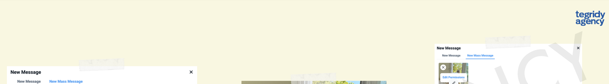
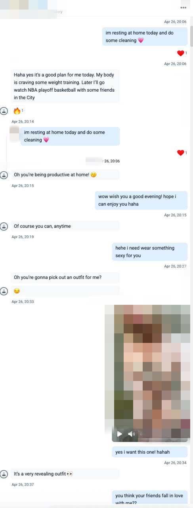
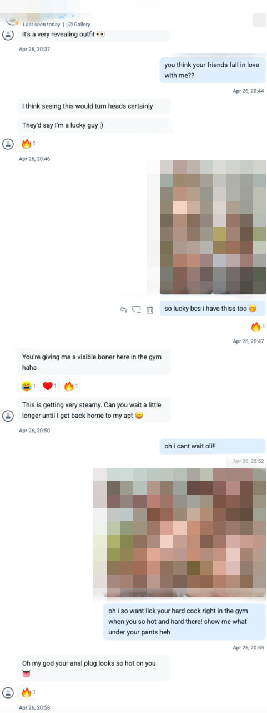
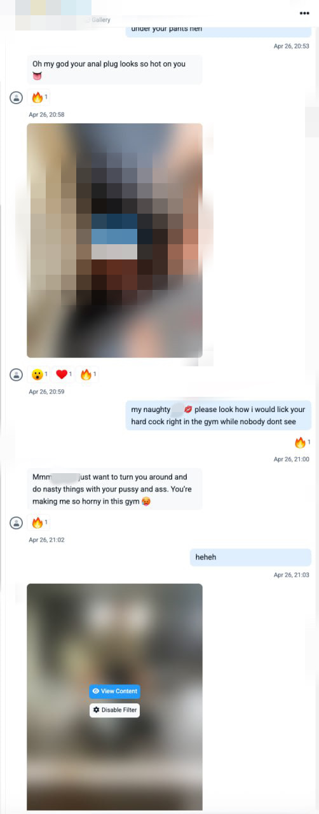
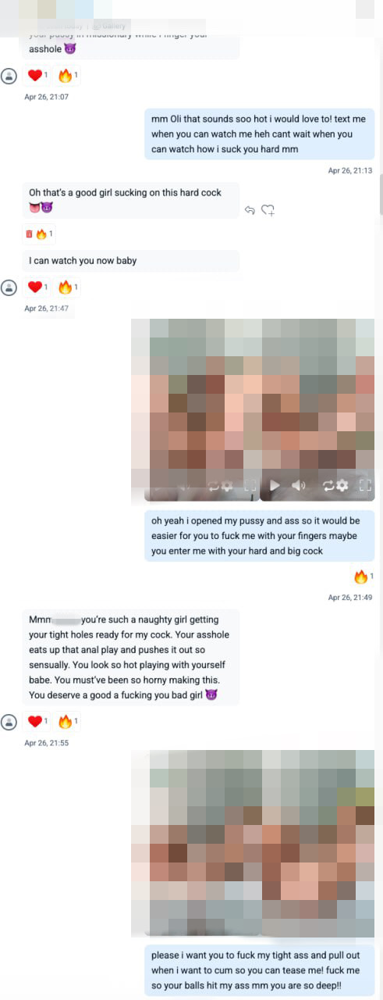

Первый контакт — это основа доверия. Именно в этот момент фан решает: останется он с тобой или пойдёт дальше. И здесь нет места импровизации.
Правило №1: всегда использовать имя из ника
Что делаем:
ОБЯЗАТЕЛЬНО БЛАГОДАРИМ ЗА FOLLOW
Если в нике написано Robot7127, ты обращаешься именно так:
Thanks for follow Robot 💗 — имя должно быть в сообщении. Всегда (без цифр) + благодарка за ФОЛЛОУ
Почему так:
Ты не просто “отвечаешь”, ты — выстраиваешь персональный контакт. Даже рандомный ник — это его идентичность, и если ты к ней обратилась — он чувствует внимание.
Это не мило. Это — тактика персонализации, которая повышает доверие и вовлечённость.
Игнор ника = потеря вовлечения.
Исключение одно: если в нике user72839 — безымянный шаблон. Тогда пиши без имени:
Thanks for follow sweetie💗
Сразу после благодарности — вторым сообщением задаём вопрос.
Примеры:
How can I call you?
How did you find me here?
Can i guess where are you from?
Почему так:
Вопрос — это крючок. Это вход в диалог.
Если ты не задала вопрос — ты не дала человеку ни одной причины продолжать переписку. Всё. Он посмотрел, сказал “окей”, и исчез. Вопрос — это не дополнение, а обязательная часть сценария. Без него ты оставляешь фаната в тишине, и он не будет инициировать диалог сам. А значит — минус подписчик, минус деньги, минус актив.
Как узнавать фаната и выстраивать реальную связь
После приветствия и первого вопроса наша задача — не просто «спросить анкету». Мы не допросный бот и не форма регистрации. Наша задача — заинтересовать, вовлечь и выстроить живое, персональное общение, в котором фанат почувствует, что ему действительно рады.
Не «спрашиваем анкету» — узнаём человека
Мы не задаём вопросы по шаблону ради галочки. Мы интересуемся.
Фанат должен почувствовать, что ты не просто «узнаёшь информацию», а замечаешь детали, реагируешь на них и сохраняешь их в памяти.
💰
Как действуем правильно:
Задаём вопросы искренне и мягко, чтобы человек чувствовал интерес, а не допрос.
Пример:
Oh, you're a Cancer? So emotional and loyal... Do you believe in horoscopes?
— вместо сухого: What is your zodiac sign?
Записываем всё важное в заметки.
Узнал имя, день рождения, любимую группу, факт про его собаку или страну, где он живёт — сразу зафиксировал. Это не просто данные — это ключи к вовлечению и повод для будущих сообщений.
Обязательно реагируем на всё, что он говорит.
— Если он рассказал, что работает врачом — не идём дальше как ни в чём не бывало и спрашиваем какие фетиши…а реагируем
— Ответ: Wow, a doctor? That’s impressive. I bet your days are intense. Do you enjoy it, or is it stressful sometimes?
Почему это важно
Фанат открывается только тогда, когда видит отклик.
Если ты просто задаёшь вопросы и не реагируешь — он закрывается. Это чувствуется моментально.
Заметки = персонализация.
Благодаря заметкам ты или кто-то из команды может поддержать контакт так, как будто знаешь фаната 2 месяца — даже если ты впервые в чате.
Именно личные детали превращают фаната в лояльного клиента.
Он может уйти от любой модели, но не уйдёт от той, которая знает его и помнит.
Ошибки, которых нужно избегать
Задавать вопрос — и не реагировать на ответ.
Игнорировать инфу от фаната, переключаясь на следующий пункт.
Не фиксировать важные вещи в заметки.
Превращать знакомство в опросник.
Ключевой принцип:
Ты не собираешь информацию — ты создаёшь отношение.
Отношение строится на внимании, искренности и реакции на детали.
Понимание типажа фаната — ключ к продажам
💡
Цель: Научиться быстро определять тип фаната, чтобы подстроить стиль общения, заинтересовать именно тем, что ему близко, и увеличить продажи без давления. Чем точнее ты считываешь поведение мембера, тем выше его лояльность и чек.
Почему это важно?
Работа с фанатом — это не конвейер, а гибкая система. Мы не просто кидаем видосики и фоточки, а выстраиваем доверие и фантазию вокруг его личных предпочтений.
Чтобы сделать это грамотно, нужно уметь быстро определить тип и реагировать соответственно.
Главные типажи мемберов:
1. Наблюдатель
— Почти не пишет, лайкает, может молча подписаться и не отвечать.
Если выходит на контакт:
Пробуждаем интерес через интригу и игру.
Пример: “Ты предпочитаешь просто смотреть… или хочешь узнать меня поближе?”
Развиваем тему “подглядывания”, “секрета”, “скрытого удовольствия”.
2. Общительный
— Задает вопросы, интересуется моделью как личностью.
Подход:
Активно ведём беседу, много внимания к деталям, флирт.
Постепенно и мягко подводим к продажам через “мне хочется поделиться с тобой чем-то особенным”.
3. Фетишист
— Сразу заявляет о предпочтениях: ноги, нижнее белье, доминирование и др.
Подход:
Не спорим — подстраиваемся.
Чем точнее попадание в фетиш, тем проще и быстрее продажа.
Можно сразу предлагать кастомы, делать акцент на деталях: ткань, цвет, поза.
4. ВИП
— Платит много и быстро. Может не говорить напрямую, но ты это почувствуешь.
Подход:
Индивидуальное отношение: селфи просто так, кастомы, ролевые игры.
Акцент на эксклюзивность: “мне хочется записать что-то только для тебя”.
Не перегружаем прайсом — продаём атмосферу, не товар.
5. Нерешительный
— Хочет, но боится. Сомневается, просит верификацию, проверяет.
Подход:
Спокойствие и мягкая убеждённость.
Говорим о границах: “у тебя свои, у меня свои — но давай попробуем в этом формате”.
Работаем на доверие, продажи — вторым этапом.
6. Ролевик
— Любит сценарии, образы, “игру”. Часто начинает переписку в роли.
Подход:
Подхватываем сразу.
Превращаем диалог в сюжет, не ломаем сценарий.
В процессе игры ведём к кастому: “хочешь продолжение истории — я могу записать это специально для тебя”.
Как определить тип фана:
С помощью грамотных вопросов:
“Как давно ты здесь?”
“Что тебе больше всего нравится?”
“Что тебя привлекло в моём профиле?”
“Ты больше визуал или любишь живое общение?”
Главное — не спрашивать прямолинейно типа “ты платишь или просто смотришь?”
Мы не продаём — мы вовлекаем.
Переход к продажам по типажу:
Каждый тип требует своего языка. Вот примеры фраз:
Для ВИПа:
“Мне кажется, ты особенный. Я хочу показать тебе то, что никто больше не видел здесь.”
Для нерешительного:
“Я понимаю, ты ещё сомневаешься… но со мной тебе будет комфортно и интересно. Может, попробуем?”
Для наблюдателя:
“Ты просто наблюдаешь… или хочешь узнать, что я прячу глубже?”
(Если он включается, ведём в сценарий подглядывания и тайны.)
Важно: Свежим мемберам - секстинг и жёсткие продажи — запрещены.
15–20 сообщений минимум, small talk, определение потребностей — и только потом прогрев и продажи.
Как мы помечаем различные типажи мемберов?
Для повышения качества работы с отдельными типажами и типами мемберов на странице, мы используем систему папок с эмодзи: 🥶, 🥵, 😴;
Где 🥶 - морозится, покупает не активно или сливается с покупок, может иногда тратить небольшие суммы;
🥵 - полная противоположность, открыто покупает, проявляет интерес к модели, откровенный кит;
😴 - раннее совершал неплохие траты, был активным, но в последнее время не очень активный;
С каждым из этих типов мемберов необходимо работать определенным образом, мы также введем листы на конкретные типы настроения и в скорем времени сообщим вам о методах работы с этими листами; категория Хз переходит в разряд - 🥶; Все нейтральные мемберы, которые никак не выделяются, не помечаются эмодзи.
Основные принципы эффективных продаж
Продажа — это не просто предложение контента, а навык общения, в котором важно уверенно держать границы и чётко понимать свою ценность.
В первую очередь важно не бояться озвучивать цену.
Отказ — это нормальная часть процесса, и к нему нужно относиться спокойно. Если фан не соглашается сразу, это не повод отступать или обесценивать себя.
При этом:
Допустимо предложить скидку, если ты сама так решила, как часть стратегии.
Недопустимо — соглашаться на постоянное снижение цены по требованию мембера.
Ты должна быть уверена в своих расценках и понимать:
любая попытка "выбить дешевле" — это уже тест на границы.
Если мембер начинает давить, уводить разговор в сторону, жаловаться, угрожать или просто тратить твоё время, это манипуляция, а не “просто диалог”.
Умей вовремя остановить и перенаправить. Твоя энергия — тоже ресурс.
Что можно продавать?
Твой арсенал — это не только фото и видео. Ты продаёшь формат общения, персональное отношение и фантазию.
Вот примеры того, что можно предлагать:
Эмоциональное внимание (онлайн-общение)
Секстинг
Фото/видео (короткие, длинные, тематические)
Кастомы
Dick rating
Голосовые сообщения
Видеозвонки
Подписка
Использование игрушек
Нижнее бельё
Фетиш-контент
...и другое, исходя из твоих границ и страницы.
Перед тем как что-то предложить — убедись, что это действительно нужно этому мемберу.
Если ты просто “отправляешь меню”, не зная, кто перед тобой — результат будет случайным.
Продажа начинается не с “что купить?”, а с понимания, чего он хочет.
Ошибка: слишком много вопросов подряд
Если сразу после приветствия начинаются:
“Что тебе нравится?”,
“Какой твой фетиш?”,
“Хочешь кастом?” —
это воспринимается как допрос и часто отталкивает.
Вместо прямого расспроса — используй сторителлинг. Расскажи небольшую историю или фантазию от третьего лица. Пример:
“Недавно я купила себе платье, такое нежное, облегающее… А потом подруга взяла такое же и сказала, что на ней оно смотрится лучше. Честно? Мне стало как-то грустно. А ты бы сказал, на ком оно лучше?”
Это вовлекает без давления и помогает тебе понять, что ему действительно интересно.
Ты наблюдаешь за его реакцией — и уже по ответу понимаешь, в какую сторону развивать продажу.
Лестница продаж: как правильно выстраивать цену и прогрев
Контент в секстинге не продаётся сразу весь и по максимуму. Он должен идти поэтапно — от самого лёгкого и дешёвого, к более откровенному и дорогому. Это называется лестница продаж.
Почему нельзя продавать сразу всё?
Фан не готов отдать $50 в первые 5 минут. Нужно вовлечь, разогреть, создать желание.
Если отдать сразу "всё", теряется интерес. Он получил результат — и ушёл.
Ты теряешь деньги. За один вечер можно продать 2–3 видео и заработать больше, чем за одно, но подороже.
Пример лестницы из нашего прайс-листа
Шаг
Контент
Пример цены
1
Тизинг-фото/видео (в белье, без нюда)
Бесплатно
2
Фото груди / пуси, лёгкий нюд
$10–11
3
Игры с грудью, пуси плеи, блоу
$15–16
4
Игрушки, пальцы, дилдо
$19–22
5
Видео с реакцией, звук, оргазм
$30–40
6
Длинное видео соло/с фетишем
$40–60 и выше
7
Фото «после» / селфи с фразой
Бесплатно
Вы должны устанавливать совершенно разные цены на лестницу продаж для студента, путешествующего, и для инвестиционного банкира, регулярно проводящего время с моделью. ЗНАЙТЕ СВОЕГО ФАНАТА, и вы сможете максимизировать свою прибыль в соответствии с этим.
РАССЫЛКИ И КАК С НИХ ПРОДАВАТЬ
Какие бывают типы рассылок:
Приветственные сообщения для новых подписчиков. Самое первое сообщение автоматически настроено, его отправляет сайт после подписки фаната. Но также мы должны отдельно написать вручную более индивидуализированное сообщение. (Об этом мы говорили вначале)
Рассылка на всех подписчиков кроме No mass dm. Делается ежедневно в начале смены. Для того, чтобы у фанатов диалог с нами поднялся выше в списке чатов.
Зачем вообще делать рассылки?
Рассылка — это крючок, а не спам. Это способ:
завязать разговор;
зацепить эмоцией;
напомнить о себе;
подготовить к секстингу и продаже контента.
✓
Плохая рассылка — это "Wanna play?". Хорошая — это трейлер, который возбуждает интерес и побуждает ответить.
Используй сокращения если рассылка выходит длинной:
используй фотографии для большего привлечения и отклика
wanna, u, gonna, lemme, wyd?, miss u, u ready?, gettin’ wet
Рассылка — не “продажа в лоб”, а завязка.
Не работает? Поменяй настроение. Стань мягче, дерзче, романтичнее.
Работай с листами, не лей всё подряд по всем фанатам.
После рассылки дожимай вручную — это даёт X2 по результату.
Главная цель любой рассылки не продать. А ЗАВЯЗАТЬ ОБЩЕНИЕ.
Только в разговоре ты сможешь продать на сотни долларов.
Рассылка — это тизер.
Переписка — это сюжет.
Продажа — это финал.

СЕКСТИНГ + примеры
✓
Что важно понять в самом начале:
Секстинг — это не просто dirty talk. Это стратегия продаж через возбуждение и эмоциональную привязку.
Ты не просто отправляешь нюд — ты ведёшь фаната по сценарию, в котором каждый шаг стоит дороже и вызывает больше эмоций.
Грязные разговоры — это стимуляция мозга и не только)
Секс начинается в голове. И твоя задача — создать настолько сильный образ, чтобы он захотел купить продолжение.
Секстинг работает через фантазию.
Самый важный орган в сексе — воображение.
Ты должна вовлекать, а не просто возбуждать.
Перед тем как идти в секстинг, ты должен(а) знать:
его фетиши;
его стиль общения (грубый / романтичный / флиртующий);
как он реагирует на шутки или тизинг;
его имя (всегда называй его по имени — это повышает привязанность).
Никакого давления. Ты не пишешь сразу “wanna f*ck?”. Ты начинаешь с простого диалога: кофе, фильмы, настроение, одежда. И потом вкидываешь пошлый намёк. Если фан цепляется — уводишь в тему.
Пример:
“Я сегодня выбирала белье, но в нём так неудобно сидеть за компом… 😏”
✓
Первое медиа — всегда бесплатное и без нюда. Это может быть:
лайф-фото с игривой подачей;
видео в белье;
селфи и все с игривой подписью “what u would do with me 😈”
Это как пробник — вовлекает, но не даёт всё сразу.
✓
Прогрев: от фото к фантазии. Каждое следующее сообщение должно:
быть чуть горячее;
иметь эмоциональный или сексуальный комментарий;
стоить дороже на $5–10.
И самое главное — описание медиа = 50% секстинга.
Нельзя просто “кинуть видео” — ты пишешь, как ты себя чувствуешь, что ты сделала, как он должен отреагировать.
Пример: ”i want hold you down and lets my hands go lower and lower..”
✓
Обратная связь от фана = навигация
Ты читаешь его ответы и адаптируешься:
Если он фантазирует про фетиш — подстраиваешь диалог туда.
Если он пишет романтику — замедляешь ритм.
Если он грубит — решаешь, играть в это или мягко перенаправить.
Но: фанат не ведёт сценарий. Ты ведёшь. Просто с вниманием на его реакцию
Структура секстинга
Small talk чтобы узнать о друг друге, или просто пообщаться
Бесплатный тизинг
Первое медиа ($10–12) c тизинг подписью
Второе медиа ($12-15) - более горячая подпись и раздевание/игра с киской
Третье ($15–20) - минет/пальцы внутрь
Оргазм / фетиш (от $25–40) - дилдо райд
Завершение (бесплатное фото “после”)
*это лишь ориентир - все индивидуально




Работа с китами: привязывание и удержание
Как подвязать кита эмоционально?
Часть 1: Эмоциональные просьбы
💡
Этот блок про то, как в переписке мягко и эффективно просить внимание или поддержку, не ломая контакт, а наоборот — усиливая эмоциональную связь.
Вот ключевые пункты:
№1. Говори о своих ощущения напрямую:
Пример: «Мне кажется, у нас стало меньше живого общения, и я правда скучаю по нашим длинным разговорам».
Почему это работает: Ты делишься состоянием, а не кидаешь претензии. Это вызывает эмпатию, а не защитную реакцию.
Как использовать: Начинай с формата «мне чувствуется», «мне не хватает», а затем предлагай шаг навстречу — например, «может, сегодня уделим друг другу больше времени?».
№2. Подчеркивай ценность связи:
Пример: «Для меня это показатель того, насколько я для тебя важна».
Почему это работает: Ты показываешь, что запрос — не каприз, а инвестиция в отношения.
Как использовать: Добавляй формулировки вроде «это важно для нас» или «твои сообщения делают меня счастливее и сближают нас».
№3. Конкретика вместо абстракций:
Пример: «Может, вечером пообщаемся подольше или покидаемся мемами?»
Почему это работает: Четкое предложение легче принять, чем размытое «пиши чаще».
Как использовать: Дай 1–2 понятных варианта: «вечерний чат» или «вопросы друг другу в переписке».
№4. Ссылайся на общую выгоду:
Пример: «Твои сообщения могли бы зарядить меня мотивацией для вещей, которые сделают нашу жизнь лучше».
Почему это работает: Ты показываешь, что выиграют оба, а не только ты.
Как использовать: Объясни эффект: «Если ты будешь писать чаще, я буду спокойнее, и нам будет проще понимать друг друга».
№5. Используй события как якорь:
Пример: «На день рождения мне было бы очень приятно получить от тебя большое, теплое сообщение».
Почему это работает: Повод делает просьбу логичной и ожидаемой.
Как использовать: Упоминай дату и мягко направляй ожидание: «На годовщину было бы круто получить от тебя что-то романтичное в чате».
Практика
Попробуй собрать свой вариант. Например:
«Я скучаю по нашим долгим перепискам. Может, сегодня вечером пообщаемся подольше? Для меня это правда важно».
Часть 2. Техники эмоционального влияния
💡
Этот раздел — про более хитрые приемы в переписке: эмоциональные триггеры, которые повышают шанс ответа и внимания.
Вот ключевые пункты:
№1. Создать ощущение ответного обязательства:
Идея: Отправь что-то личное и нестандартное, чтобы игнорировать было сложно.
Почему это работает: Людям психологически некомфортно оставлять без реакции личные жесты.
Как реализовать:
Поцелуй лист бумаги, оставь следы помады и сфотографируй.
Добавь текст: «Сегодня весь день думала о тебе и сделала это. Самое ценное — искреннее».
Отправь в чат.
№2. Зацепи воображение и самооценку:
Идея: Через сообщения дать почувствовать, что он желанен и значим.
Почему это работает: Комплименты и внимание усиливают вовлеченность и желание отвечать.
Как применять: Используй фразы вроде «твои сообщения заставляют меня фантазировать» или «я целый день жду, когда ты напишешь».
Рекомендации по использованию:
Выгляди искренне: Даже если это техника, добавляй личные детали из вашей переписки.
Не перегибай: Давление и частота без пауз быстро утомляют.
Подстраивай под себя: Если сексуальный подтекст не твоя история — заходи через юмор, тепло или милоту.
Работа на удержание кита
📌
Постоянный клиент позже, заплатит гораздо больше.
Важно отслеживать не только как оператор пообщался с фаном, а сколько фан принес за всю жизнь на странице.
Формула заключается в том, что:
перспективный мембер тот, кто платит 100$ стабильно 4 месяца;
чем мембер из которого выжали 300$ и он исчез;
Из этого рождается система, в которой разовая продажа является не выгодной, относительно перспективы дохода.
Мы вывели систему “Светофора чувств” для постоянного мембера или кита.
В которой:
🟢 - мембер находится в положительном состоянии, активно идет на контакт, помимо продаж, с ним заводятся эмоционально крепкие отношения, в основном согласен на предложения о покупке контента;
🟡 - мембер нестабилен, не выходит на активный диалог, часто сливается с продаж, получил недопустимую порцию попыток продажи и/или секстингов, особенно неудачных, без удовлетворительного чата на сторонние темы;
🔴 - на грани ухода, не выходит на контакт, продаж не было, выдоен;
Китами, считаются платные мемберы на которых была сделана прибыль в размере 300$ +
В том числе, важным пунктом является ведение заметок о тех продажах, которые состоялись и о предложениях по продаже какого либо контента. В заметку должно быть включено:
19.12 - был секстинг (название пака), поболтали о фетишах, любит трусы красные, сейчас пойдет спать - Имя Смена оператора
Это необходимо, по следующим пунктам:
исключить продажу однотипного контента;
сохранять паузу между продажей и обычным диалогом;
не давить, после крупной закупки;
сохранить "кита" и не выдоить его до последней капли;
В том числе, важно соблюдать паузы между продажей эротического контента и общением с китом, дабы избежать возможного снижения интереса, со стороны мембера.
📌
Обязательное правило Если по платнику нет заметки - это считается ошибкой оператора. Заметка ставится сразу после общения, а не «когда вспомню».
Это значит, что санкции будут применяться к тому оператору, который не предоставил соответствующую информацию.
Когда устанавливается заметка:
после секстинга;
после крупных покупок / паков / кастомов / PPV;
после значимого диалога (узнали важную инфу / сместили настроение / обговорили идею секстинга/кастома);
после предложения о покупке паков / кастомов / PPV;
Урок пройден!Прогресс сохранён. Можно двигаться дальше.